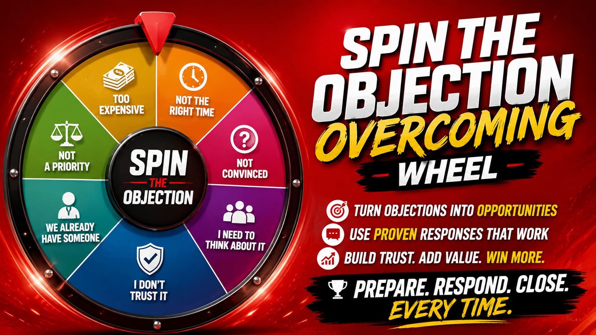
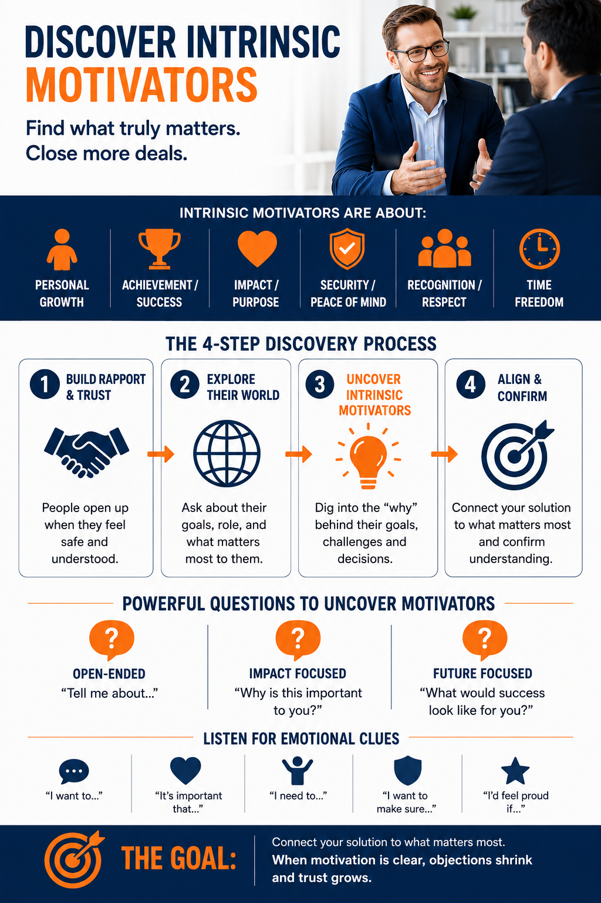

Type the objection.
Get the words that close it.
You are on the phone. They just said something that stopped you cold. Type it in the box below and get the reframe, two field-tested scripts, and the power move — in about one second. Over 200 real objections, answered by sales trainer Zach Wennstedt.

Spin It. Answer It. Out Loud.
This is a drill, not a toy. Spin the wheel, get a live objection from that category, and you have fifteen seconds to say your answer out loud before the script reveals. Do it ten times a day for two weeks and you will never freeze on a call again. Managers: run this on speaker in your morning huddle.
Spins today: 0 · Streak: 0
You will get a real objection from a random category. Say your answer out loud before the timer runs out. Then compare.
Great salespeople need someone to sell to.
Eye To Ad Media builds the SEO, AIO, and GEO systems that fill the top of your funnel so your newly trained team has real conversations to have. Denver-built, running since 2012.
The Intrinsic Motivator Map
People do not buy features. They buy the thing underneath the feature. This map lays out the intrinsic motivators driving every purchase decision and the six-step conversion process that connects your offer to them. Tap the image to blow it up full size — the fine print is where the value lives.

Tap to enlarge ⤢Want this customized with your product, your buyer, and your objections on it? That is the first deliverable of a Systematic Selling engagement.
What's on this page
- Why your sales team is stalling
- What untrained selling actually costs
- Why most sales training fails
- The Systematic Selling System
- The physics of an objection
- The twelve objection families
- Value over price, in detail
- Every major sales methodology, explained
- What 1912 already knew about selling
- How to write a script people don't hate
- Discovery: the part everyone skips
- The numbers that actually predict revenue
- Coaching vs. managing
- Industry-specific selling
- Who is Zach Wennstedt
- Questions people ask
Why Your Sales Team Is Stalling
Almost no sales team has a talent problem. Nearly every sales team has a consistency problem. Your best rep and your worst rep are having completely different conversations with identical prospects, and neither one of them could write down what they actually do. That is not a personnel issue. That is a missing system.
Here is what it looks like from the inside. You hire a rep who interviewed beautifully. You give them a product sheet, a login, and a two-week ride-along with whoever happens to be free. They pick up habits by osmosis — some good, most accidental. Three months in, they are producing at forty percent of your top performer and nobody can articulate why. So you send them to a seminar. They come back energized for eleven days. Then the energy fades and they go right back to doing what they were doing, because a seminar gave them motivation and what they needed was a process.
Meanwhile your top performer is a black box. She closes at three times the team rate and when you ask her how, she says something like "I just build rapport" or "I listen." She is not being cagey. She genuinely does not know. Her method is stored in muscle memory, not in language. And the moment she leaves for a competitor, thirty percent of your revenue walks out the door with her, and it takes eighteen months to rebuild it.
That is the actual problem. Not motivation. Not headcount. Not the CRM. The problem is that the knowledge that produces revenue in your company lives inside individual skulls instead of inside a documented, teachable, repeatable process that anyone you hire can execute in week three instead of month nine.
The five stall patterns
Across manufacturers, contractors, agencies, med spas, home services, professional practices, and B2B software teams, the same five patterns show up over and over.
The pitch loop
The rep talks for eleven minutes before asking a question. They confuse enthusiasm with persuasion. Prospects go quiet, say "send me some info," and disappear forever. Nobody realizes the deal died at minute two.
The objection freeze
The buyer raises a concern the rep did not anticipate. There is a pause. The rep gets defensive, over-explains, or immediately drops the price. The buyer now knows the first number was fake.
The pipeline mirage
Forty deals in the CRM, thirty-two of which are just people who were polite once. The forecast is fiction. Nobody has defined what a real opportunity actually is, so everything qualifies.
The one-call trap
Every deal is treated as a single conversation instead of a sequence with defined exits. No next step is ever booked on the call, so follow-up becomes chasing, and chasing reads as desperation.
The fifth pattern is the quietest and the most expensive: nobody knows what "good" sounds like. Ask five people on a team to describe an excellent discovery call and you will get five different answers. If excellence is undefined, it cannot be coached, measured, hired for, or repeated. Everybody is just trying hard in slightly different directions.
Talent is what you have. A system is what you can give to someone who does not have it yet.Zach Wennstedt
What breaks the pattern is not a pep talk. It is writing the thing down. Getting the sequence out of your best performer's head and onto paper. Naming the stages. Defining what has to be true to move from one to the next. Building the objection responses in advance instead of improvising them at the worst possible moment. Then drilling it until it is boring, because boring is what reliable feels like from the inside.
What Untrained Selling Actually Costs You
Most owners underprice this problem because the cost is invisible. Nothing shows up on the income statement labeled "deals we lost because Kevin panicked when they asked about the warranty." So let's make it visible.
Run your own numbers. Take your average deal value. Multiply it by the number of qualified conversations your team had last month. That is your theoretical ceiling. Now multiply by your actual close rate. The gap between those two numbers is your training budget, and it is almost always an order of magnitude larger than what quality training costs.
A team having 80 qualified conversations a month at a $6,000 average deal has a $480,000 monthly ceiling. At a 15% close rate they book $72,000. Move the close rate to 22% — a seven-point improvement, which is a very ordinary result from fixing discovery and objection handling — and the same conversations, the same leads, the same marketing spend now produce $105,600. That is $33,600 a month, roughly $403,000 a year, from talking to the exact same people differently.
Now add the costs that don't show up in close rate at all:
- Discount leakage. Untrained reps buy deals. Every time a rep drops five percent to escape an uncomfortable silence, that comes straight off the bottom line at 100% margin. A team giving away an average of 6% on $900,000 in annual bookings is burning $54,000 to avoid discomfort.
- Ramp time. A new hire without a documented process takes six to nine months to reach quota. With one, twelve to sixteen weeks is realistic. Every month of shortened ramp is a month of full production you were previously paying salary for and not receiving.
- Turnover. Reps do not quit because the product is hard. They quit because they are failing and nobody can tell them precisely why. Failure without diagnosis is demoralizing. Replacing a rep costs somewhere between half and twice their annual compensation once you count recruiting, onboarding, lost pipeline, and management hours.
- Marketing waste. If you spend money generating leads and then hand them to people who cannot convert them, you are not running a marketing program. You are running a very expensive lead disposal service.
- Reputation drag. A prospect who has a bad sales conversation does not just decline. They tell people. In small markets and tight verticals, three bad conversations can quietly close a referral channel for years.
There is one more cost that owners feel but rarely name: you become the closer. Every complicated deal escalates to you. You cannot take a vacation, you cannot build anything, and the business cannot be sold at a decent multiple because the buyer can see plainly that the revenue engine is you personally. Systematizing the sale is one of the most reliable ways to increase what your company is worth, because it converts a founder-dependent operation into a transferable asset.
Why Most Sales Training Fails
If you have already tried sales training and it did not stick, you were probably sold one of these five things.
1. The motivational event
A charismatic speaker, a hotel ballroom, and a room full of people feeling great. Zero behavior change on Monday, because feelings decay and nothing was written down. Inspiration is a fuel, not an engine.
2. The generic curriculum
Content built for "salespeople" in general. Your team sells a $40,000 custom install with an eight-week decision cycle and three stakeholders. Generic training cannot name your buyer's actual objections, so it never touches the moment where deals die.
3. The manipulation playbook
Tie-downs, alternative choice closes, false urgency, and pressure tactics that were dated by 1985. Modern buyers have seen all of it. The moment they detect technique, trust collapses and the deal is over even if they cannot articulate why.
4. The software rollout
Buying a tool and calling it a process. The CRM is a filing cabinet. It records what your team does. It cannot decide what they should do, and it has never once told a rep what to say when a buyer says "let me talk to my partner."
The fifth failure is the one nobody talks about: training without reinforcement. The research on skill acquisition is unambiguous and it applies as much to selling as to a golf swing. A single exposure to information produces almost no durable change. Skills form through spaced repetition, immediate feedback, and practice under mild pressure. A two-day workshop with no follow-up produces a binder. Eight weeks of short drills with call review produces a different salesperson.
This is exactly why the free tools on this page exist. The Objection Engine and the wheel are not lead magnets pretending to be useful. They are reinforcement mechanisms. Sixty seconds of spaced repetition a day, done consistently, beats a $15,000 workshop that nobody revisits. If you use nothing on this site but the wheel, every morning, for a month, your team will get measurably better and I will not have made a dollar. That is fine. It is also the most honest advertisement I can make for what the paid work does.
If your training does not survive contact with a real prospect on a Tuesday afternoon, it was entertainment.The reinforcement rule
The Systematic Selling System
Seven phases. Every phase has an entry condition, a required behavior, and an exit gate. A deal cannot move forward until the gate is satisfied. This is the backbone of every engagement I run, customized to your product, your buyer, and your sales cycle.
Target
Before anyone dials, you define who is actually worth talking to. Not a demographic — a set of observable qualifying conditions. Company size, trigger events, budget indicators, decision structure, urgency signals. The most common revenue leak in small business is excellent selling aimed at people who were never going to buy. Exit gate: the prospect matches at least three written qualifying criteria.
Open
The first ninety seconds decide whether you get a conversation or a brush-off. You are not building rapport with weather talk. You are earning the right to ask questions by demonstrating in one sentence that you understand their situation better than the last three people who called. Exit gate: the prospect has agreed to a specific block of time and knows what you will cover.
Discover
The longest phase and the one that determines everything downstream. You are mapping four things: current state, desired state, the cost of the gap, and the decision process. You are not looking for pain to exploit. You are looking for whether a real problem exists that you can genuinely solve. Exit gate: the prospect has stated a problem in their own words and attached a number or a consequence to it.
Frame
Before you present anything, you establish the criteria by which a good solution should be judged. Whoever sets the decision criteria usually wins the deal. If your competitor sets them, you spend the rest of the cycle defending. Exit gate: the prospect has agreed out loud to the three or four factors that matter most.
Present
Now, and only now, you talk about what you do. The presentation is not a tour of your capabilities. It is a point-by-point mapping of their stated problems to your specific mechanisms, using their words. If you say something they did not tell you mattered, cut it. Exit gate: the prospect has confirmed the solution addresses what they described.
Resolve
Objections are not an interruption of this phase. They are the phase. A buyer who is genuinely engaged will raise concerns, and your job is to surface the hidden ones rather than hope they stay hidden. Every objection gets acknowledged, isolated, reframed, and closed with a forward-moving question. Exit gate: the prospect confirms there is nothing else standing between them and yes.
Commit
The close is not a moment of pressure. If phases one through six were done correctly, the close is administrative. You confirm the decision, define the first three steps, name dates, and get the paperwork moving while momentum is live. Exit gate: a signed agreement or a booked, calendared next action with a named owner.
The gate rule
The single most valuable habit any team adopts from this system: you may not skip a gate. Most losses are not caused by weak closing. They are caused by a rep who presented before discovering, or quoted before framing. When a deal goes sideways, the fix is almost never at the end. It is at the gate you jumped.
The Physics of an Objection
An objection is not resistance. An objection is a request for information delivered in the grammar of refusal. When somebody says "it's too expensive," they are almost never saying "I have insufficient money." They are saying "I cannot yet see why this costs what it costs." Those are completely different problems and they require completely different responses.
Untrained reps hear objections as attacks and respond defensively. Trained reps hear them as data and respond curiously. That single shift — from defending to investigating — changes more outcomes than any closing technique ever invented.
Stated objection vs. real objection
Every objection has two layers. The stated objection is what comes out of their mouth. The real objection is the thing underneath it that they are either unwilling to say, unable to articulate, or unaware of. People give socially acceptable reasons for decisions driven by unacceptable ones, and this is not dishonesty. It is ordinary human behavior.
| What they say | What it often means | What to ask |
|---|---|---|
| "It's too expensive." | "I haven't connected the price to an outcome I care about." | "Compared to what?" |
| "I need to think about it." | "There's a specific unresolved concern I'm not saying out loud." | "Totally fair. What specifically do you want to think through?" |
| "Send me some information." | "I want this call to end politely." | "Happy to. What would need to be in it for it to be worth your time?" |
| "I need to talk to my partner." | "I'm not sold enough to defend this to someone else." | "If they said yes right now, would you?" |
| "We're happy with our current provider." | "Switching feels like more work than staying." | "What would have to change for you to look?" |
| "Call me in six months." | "This isn't urgent enough to displace what's already on my plate." | "What will be different in six months?" |
| "I'm getting other quotes." | "I don't know how to compare you and I'm defaulting to price." | "What are you comparing on besides number?" |
| "We tried something like this before." | "I got burned and I'm protecting myself." | "What went wrong last time?" |
Look at that right-hand column. Every single one is a question, not a rebuttal. That is the entire discipline. When you answer a stated objection with an argument, you win the argument and lose the sale. When you answer it with a question, you find the real objection, and the real objection is usually far easier to solve than the fake one.
The five-step method
Every response in the Objection Engine above follows the same structure, because structure is what lets a nervous person perform under pressure.
- Pause. Two full seconds. No sound. This is uncomfortable and it is the highest-leverage two seconds in selling. Instant responses sound rehearsed, which tells the buyer you have heard this a thousand times and they are not being listened to. The pause says: I took that seriously.
- Acknowledge. Reflect it back in your own words and let them confirm it. "So the concern is that the up-front number is bigger than what you budgeted for this quarter — is that right?" You have now made them an ally in defining the problem rather than an opponent.
- Isolate. "If we solved that, is there anything else keeping you from moving forward?" This one question prevents the most demoralizing pattern in sales: solving objection one, getting objection two, solving that, getting objection three, forever. Isolation converts an infinite queue into a finite list.
- Reframe. Change the axis of comparison. They are comparing your price to a competitor's price. You move the comparison to cost per year of ownership, or to the cost of the problem continuing, or to the price of the second-cheapest failure. A reframe is not a trick. It is showing them a dimension of the decision they had not considered.
- Advance. End with a small forward-moving question, not a request for the whole decision. "Does it make sense to get the site measurement on the calendar so you have real numbers?" is easy to say yes to. "So do you want to move forward?" restarts the entire deliberation.
You do not overcome objections. You dissolve them by finding out what was actually being asked.The core discipline
The Twelve Objection Families
There are hundreds of objections and roughly twelve underlying reasons for all of them. Learn the families and you can improvise your way through an objection you have never heard, because you will recognize its shape.
Price
"Too expensive," "not in the budget," "your competitor is cheaper." The buyer has not connected cost to outcome. Almost never about available money. Reframe onto value, ownership cost, or cost of inaction.
Timing
"Not right now," "call me next quarter," "we're in the middle of something." Urgency is missing or a competing priority is winning. Attach a cost to the delay itself.
Trust
"Never heard of you," "how do I know you'll deliver," "you're too small." Risk is the real currency. Answer with proof, guarantees, references, and reversibility — not with adjectives about yourself.
Authority
"I need to run it by my partner / board / spouse." Either they genuinely cannot decide, or they can and are hiding behind someone. Both are solvable, differently. Find out which one you have.
Need
"We're fine," "I don't think we need this." Discovery failed. Do not present harder. Go backward and find a problem they will admit to owning.
Competitor
"We already use someone." Switching cost, not satisfaction, is usually the barrier. Never attack the incumbent — you insult their past decision. Ask what they wish were different.
Status quo
The hardest competitor in every market is doing nothing. Inertia costs zero today and everything eventually. Quantify what standing still is costing right now.
Risk
"What if it doesn't work?" Fear of a visible, blameable mistake. De-risk with pilots, phasing, guarantees, and a written picture of what happens if it goes wrong.
Fit
"We're different," "that won't work in our industry." They think you built for someone else. Answer with a near-identical case, not with reassurance.
Comparison
"I'm getting three quotes." They lack criteria, so price becomes the only visible axis. Give them a comparison framework — ideally one you win on for honest reasons.
Bandwidth
"We don't have time to implement." A real objection disguised as a soft one. Show the actual hours required and who does what.
Apathy
Ghosting, one-word replies, endless "circling back." The least discussed and most common. The deal never had a real problem attached. Give them permission to say no and you will often get a real answer.
Value Over Price, In Detail
Price is the objection everyone asks me about, so it gets its own section. Here is the thing to internalize first: price is only an objection when value is unclear. Nobody argues about the price of something they desperately want and clearly understand. When somebody pushes back on cost, they are telling you that in their mind, the two sides of the scale are not balanced. You have exactly two moves: lower the price, or raise the perceived value. One of those destroys your margin permanently and teaches your market that your prices are negotiable. The other one is the job.
The seven price reframes
These are the seven axes you can move a price conversation onto. Each one is a different way of showing the buyer that the number they are staring at is not the number that matters.
- Cost of inaction. The comparison is not your price versus zero. It is your price versus what the problem costs to keep. "The system is $8,400. You told me the current process is eating about six hours a week of your time. At your billing rate, that problem costs you roughly $31,000 a year, every year, forever."
- Cost per unit of time. Break the number into the smallest honest denominator. A $6,000 system that lasts seven years is $71 a month. A $30,000 investment producing $200,000 in revenue is fifteen cents on the dollar. Do not do this dishonestly — do not divide a subscription by a lifetime — but do let them see the real ratio.
- Total cost of ownership. The cheaper option is frequently more expensive. Include installation, downtime, replacement cycle, maintenance, staff time, and the cost of doing it twice. "Theirs is $2,000 less today. It also needs replacing in year four instead of year eleven. Over the same decade you'd buy theirs three times."
- The shopping tax. This is the one people underuse. Collecting and comparing four proposals costs real hours — calls, site visits, reading, meetings, negotiating, second-guessing. "You've already done the work of finding a company you like and that fits. Three more quotes will take you about eleven hours over five weeks to maybe save four hundred dollars. What is eleven hours of your time worth?"
- Risk-adjusted price. The cheapest bid is cheapest for a reason and the reason is a risk you are being asked to absorb. Price the risk out loud. "Their number assumes nothing goes wrong. Mine includes the contingency. If nothing goes wrong, they were cheaper. If anything does, you'll pay the difference and then some, and you'll pay it under pressure."
- Already-decided reframe. When someone has genuinely made up their mind about what they want and is only balking at the number, remind them of the decision they already made. "You told me forty minutes ago that the current setup is costing you customers and you want it fixed before spring. Nothing about that changed in the last forty minutes. The only question left is whether you fix it now or after another season of losing them."
- Value per outcome. Convert the price into a per-result number. "If this brings in four new clients a year and your average client is worth $9,000, this pays for itself in month three and everything after that is profit." Be conservative — use the number you can actually defend, and say out loud that you are being conservative.
What to do when they are genuinely broke
Sometimes the price objection is literal. The money is not there. Reframing does not create funds and pushing a person who cannot afford something into buying it is how you earn a refund, a bad review, and a bad night's sleep. When the constraint is real, you have four honest options: phase the project into stages they can afford, reduce scope to the highest-value component, help them find financing if that genuinely serves them, or tell them the truth — that now is not the moment — and set a specific date to revisit. That last one wins more long-term business than any close ever written, because the person who told them the honest thing is the person they call when the money shows up.
Discounting is not a sales skill. It is what happens when a sales skill is missing.Zach Wennstedt
Every Major Sales Methodology, Explained Plainly
People ask which methodology I teach. The honest answer is that none of them is complete and all of them contain something true. Here is what each one actually contributes, described in plain language so you can decide what belongs in your process. These are frameworks and trademarks belonging to their respective authors and publishers; what follows is my own summary of the ideas, not their materials.
Question-based consultative selling
Popularized in the 1980s through research on what high performers do differently in complex sales. The core finding: top performers ask a sequence of questions that moves from situation, to problem, to the implications of that problem, to what solving it would be worth. The insight worth stealing is that the implication questions do the persuading. When a buyer says out loud what the problem is costing them, they persuade themselves in a way you never could.
Qualification frameworks (BANT and successors)
Budget, Authority, Need, Timeline — a 1960s IBM checklist that survives because it is memorable. Later frameworks added metrics, decision criteria, decision process, pain identification, and finding an internal advocate. The idea worth stealing: qualification is not a form you fill out, it is a set of things you must learn or you are guessing. The failure mode is treating it as an interrogation. Get the same information through conversation.
Teaching-led selling
Research in the 2010s suggested the highest performers in complex B2B sales are not the relationship-builders but the ones who teach buyers something surprising about their own business, tailor it to the specific person, and take assertive control of the conversation including money. The idea worth stealing: bring an insight, not a brochure. If your buyer learns nothing from your call, you were a catalog with a pulse.
Pain-and-qualification selling
A school of thought built around the idea that the seller and buyer should establish mutual agreements up front about how the conversation will go, that "no" is an acceptable and useful answer, and that a seller should disqualify aggressively rather than chase. The idea worth stealing: the upfront contract. Agreeing at the start on the agenda, the time, and what outcomes are possible — including a mutual no — removes almost all of the weirdness from a sales call.
AIDA (1898)
Attention, Interest, Desire, Action. Attributed to advertising pioneer Elias St. Elmo Lewis and now well and truly in the public domain. It is a hundred and twenty-eight years old and every landing page, cold email, and pitch deck still runs on it. The idea worth stealing: sequence matters. You cannot create desire in someone whose attention you never got.
Value / ROI selling
Building the case in the buyer's financial language: cost of the current state, quantified benefit, payback period, risk of inaction. Essential in any deal where a committee has to approve. The idea worth stealing: your champion has to sell this internally without you in the room. Give them the numbers and the one-page argument to do it with.
What I actually build for clients is not a branded methodology. It is a process assembled from the parts that fit your deal — question sequences for complex sales, tight qualification for high-volume, teaching content for skeptical technical buyers, upfront contracts for anyone whose calendar is under siege. The methodology should serve the sale. Not the other way around.
What 1912 Already Knew About Selling
Here is something that will save you money: most of what is sold as cutting-edge sales insight was published before the First World War, is out of copyright, and can be downloaded free right now. I read this material constantly, both because it is good and because it is a useful antidote to hype. When a course promises you a revolutionary new closing technique, it helps to know that Norval Hawkins was explaining the same psychology to Ford dealers in 1920.
These are genuinely public domain in the United States and free to read, quote, and build training on with no license and no fee:
Certain Success
Norval A. Hawkins, 1920. Hawkins ran sales for Ford during the Model T era, which makes him arguably the most operationally experienced sales author in the public domain. His work on organizing selling as a repeatable system rather than a personal gift is the direct ancestor of everything on this page. Read free at Project Gutenberg.
The Psychology of Salesmanship
William Walker Atkinson, 1912. An early attempt to describe what happens inside a buyer's mind during a sale. Some of the psychology has been superseded and some of it holds up remarkably well — particularly on attention, suggestion, and the difference between interest and desire. Free at Project Gutenberg.
Selling Things
Orison Swett Marden & Joseph Francis MacGrail, 1916. Broad, practical, and unusually good on the ethics of selling — the argument that a sale which does not serve the buyer is a failure regardless of whether money changed hands. Free at Project Gutenberg.
Letters From an Old Time Salesman to His Son
Roy Lester James. Written as correspondence, which makes it the most readable of the group. Excellent on territory management, persistence, and the daily discipline of the job — the unglamorous stuff that actually separates performers. Free at Project Gutenberg.
Two more free, no-fee sources worth knowing about, both produced by the US government and therefore public domain by statute:
- O*NET, from the US Department of Labor, publishes structured task, skill, knowledge, and work-activity data for every sales occupation in the country. If you are writing a job description, a competency model, or an onboarding curriculum, this is a free skeleton you can start from.
- The Bureau of Labor Statistics publishes wage, employment, and projection data by occupation and metro area. Useful for compensation benchmarking, territory planning, and knowing whether your comp plan is competitive before your best rep finds out that it isn't.
Everything in the Objection Engine on this page is original work — my own scripts, written from my own client engagements. But the underlying principles are old, tested, and free, and I would rather you know that than believe there is a secret you have to buy.
Being findable is the first sale you make.
AI answer engines are now deciding which companies get recommended before a human ever visits a website. Eye To Ad Media builds SEO, AIO, and GEO systems so you are the answer, not the also-ran.
How To Write A Script People Don't Hate
Half the sales teams I meet refuse to use scripts because they think scripts sound robotic. They are describing bad scripts. Every actor you have ever been moved by was working from a script. The script is not the problem. Reading it aloud like a hostage video is the problem.
A good sales script is not a paragraph to recite. It is a set of tracks — the specific question you ask at a specific moment, and the two or three most likely branches from the answer. You memorize the questions and the transitions. Everything between them stays yours.
The six rules
- Write it in spoken English, not written English. Contractions. Fragments. Short sentences. Read every line out loud before it goes in the binder. If it feels strange in your mouth, it will sound strange in their ear.
- Script the questions, not the answers. Your reps should have twenty questions memorized cold and near-total freedom in how they respond. Locking down responses is what produces the robot effect.
- Include the silences. Mark on the page where the rep is supposed to stop talking. Untrained people fill silence. Explicitly writing "PAUSE. Say nothing." into a script is one of the highest-impact edits you can make.
- Use their words, not yours. Record ten calls and pull out the exact vocabulary buyers use to describe their problem. Then put those words in the script. If your customers say "jobs" and your marketing says "engagements," your marketing is wrong.
- Design for the branch, not the ideal path. Most scripts document the conversation where everything goes well, which is the conversation that needs the least help. Write the branches. What happens when they say no. What happens when they go quiet.
- Version it and date it. A script is a living document. When a new objection appears three times in a month, it gets added. Teams that treat the script as permanent stop learning.
The test for whether a script is working: a competent new hire should be able to run a passable discovery call in week two. Not a great one. A passable one. If your onboarding cannot produce that, the knowledge is still trapped in people's heads.
Discovery: The Part Everyone Skips
If I could change one behavior across every sales team in America, it would be this: stop presenting so early. The urge to start explaining what you do is overwhelming, especially when you are proud of it, and it is the single most reliable way to lose a deal you should have won.
Discovery is not a warm-up for the pitch. Discovery is where the sale is decided. By the time you present, the deal is either won or lost — the presentation just reveals which.
The four maps
A complete discovery produces four things. If you cannot fill in all four after the call, you did not finish discovery, and any proposal you send is a guess with a price on it.
Current state
What they do now, how it works, who touches it, what it costs, and how long it has been that way. Concrete and specific. "It's inefficient" is not an answer. "It takes Denise about six hours every Thursday and she's late on payroll twice a month because of it" is an answer.
Desired state
What good looks like in their words. Not what your product does — what their world looks like if the problem were gone. This gives you the language for your entire proposal.
The gap's cost
A number or a consequence. Money, hours, customers, risk, stress, a specific thing that will happen if nothing changes. Without this there is no urgency, and without urgency there is no decision. This is the hardest one and the most valuable.
Decision process
Who decides, who influences, who can veto, what the steps are, what the timeline is, whether there is money allocated, and what has to happen internally. Most reps ask about budget and stop. Budget is the least useful of these five.
Ten questions that do the work
Steal these. They are deliberately open, deliberately uncomfortable in a couple of places, and they consistently produce more than the polite version does.
- "Walk me through how this works today, start to finish."
- "How long has it been that way?"
- "What made you take this call now, as opposed to six months ago?"
- "What have you already tried?"
- "What did you like and not like about how that went?"
- "If this stays exactly as it is for another year, what happens?"
- "Who else feels this problem besides you?"
- "What would have to be true for you to say this was worth doing?"
- "Walk me through how a decision like this actually gets made here."
- "What's most likely to stop this from happening?"
That last one is the one people are scared to ask. Ask it anyway. It is the single highest-yield question in selling, because the answer is the objection you would otherwise discover four weeks from now in an email that says "we've decided to go a different direction."
The Numbers That Actually Predict Revenue
Most sales dashboards measure outcomes you cannot control. Here are the leading indicators that tell you what next quarter looks like while you can still change it.
| Metric | What it tells you | What to do if it's bad |
|---|---|---|
| Talk-to-listen ratio | Whether discovery is happening at all. Healthy discovery calls run roughly 40% rep / 60% buyer. | Drill questions. Put a physical timer on the desk. Review recordings. |
| Next-step booking rate | Percentage of calls that end with a calendared next action. This is the strongest early predictor of close rate I know. | Make it a non-negotiable close to every call. No exceptions. |
| Stage-to-stage conversion | Where deals actually die. Everybody quotes overall close rate; the useful number is which gate is leaking. | Fix the leaking stage. It is almost always earlier than you think. |
| Average discount given | Whether your team is selling value or buying deals. | Objection training and a written discount authority policy. |
| Time in stage | Deals rotting in place. A deal sitting in "proposal sent" for 45 days is not a deal. | Define maximum stage age. Force a decision or a close-lost. |
| Objection frequency log | Which concerns show up most. Feeds directly back into your script and your marketing. | Log every objection for 30 days. The top five write your next training. |
| Ramp-to-quota time | The health of your onboarding system, measured in dollars. | Document the process. This number is the whole argument for systematization. |
| Win rate vs. no-decision | Separates losses to competitors from losses to inertia. They need opposite fixes. | High no-decision means weak discovery, not weak closing. |
Note the pattern: seven of these eight are behaviors, not results. You cannot manage a close rate. You can absolutely manage whether every call ends with a booked next step, and if you do that one thing relentlessly for a quarter, the close rate moves on its own.
Coaching Is Not Managing
Most sales managers were promoted because they were good at selling, which is roughly like promoting the fastest runner to coach the track team. Selling and developing sellers are different skills, and almost nobody is taught the second one.
Managing is about the number. Coaching is about the behavior that produces the number. A manager asks "where are we on the Henderson deal?" A coach asks "play me the last two minutes of that call." The first question generates a status update and mild anxiety. The second one generates improvement.
| Managing sounds like | Coaching sounds like |
|---|---|
| "You need to close more." | "Your discovery calls average nine minutes. Let's get them to twenty-five and see what happens." |
| "What's your number this month?" | "How many of your calls last week ended with a booked next step?" |
| "Try harder on follow-up." | "Here are three follow-up messages. Let's rewrite yours together right now." |
| "They said it was too expensive? That's a bad lead." | "Let's role-play that objection five times until it's automatic." |
| "Update your pipeline." | "Walk me through why this deal is in stage four instead of stage two." |
The weekly coaching rhythm
The rhythm that works, in my experience, is unglamorous and takes about ninety minutes a week per rep. Fifteen minutes of recorded call review against a written scorecard. Twenty minutes of live role play on the objection that came up most that week. Thirty minutes of pipeline review by stage, not by gut feeling. And fifteen minutes on one specific skill, chosen in advance, drilled to the point of boredom.
The reason most companies do not do this is that it feels like a lot of time. It is a lot less time than hiring a replacement.
Scratch It And See
Scratch the panel with your finger or mouse. What's underneath is a real, honorable discount on a Systematic Sales Presentation built specifically for your company, your product, and your buyer's actual objections.
MySalesHelp Instant Offer
Scratch to reveal · One per company
👆 Scratch the gold panel to reveal your offer
Mention your code on the call. Valid 30 days. Applies to a new Systematic Sales Presentation engagement. Not combinable with other offers.
The Sales Arcade
Three games, all of them secretly drills. Play them on a slow Tuesday and you will absorb vocabulary and pattern recognition that takes new reps months to pick up by accident.
Unscramble the sales term
Loading…
Loading…
Match each objection to the reframe that dissolves it.
Selling Is Universal. Your Sale Is Not.
The principles transfer. The scripts do not. Here is how the work changes by the kind of sale you run.
Home services & contractors
In-home, high-emotion, one-visit decisions with a spouse present and three competing bids. The work here is almost entirely about framing decision criteria before the quote, handling the "we're getting other estimates" moment, and never leaving without a defined next step.
B2B services & agencies
Multi-stakeholder, long cycles, and a champion who has to sell you internally without you present. The work is discovery depth, ROI framing your champion can carry into a meeting, and killing "no-decision" losses.
Medical & aesthetic practices
Consultations where the person selling did not sign up to be in sales and feels uncomfortable doing it. The work is a consultation framework that feels clinical rather than commercial, and financing conversations that do not embarrass anyone.
Manufacturing & distribution
Technical buyers, procurement gates, incumbent suppliers, and price sheets. The work is displacement selling, total-cost-of-ownership arguments, and getting past a purchasing department trained to commoditize you.
Professional practices
Attorneys, accountants, advisors, consultants. Expertise is abundant and the sale is trust. The work is a structured intake conversation, transparent pricing language, and follow-up that does not feel like pestering.
Retail & high-ticket showroom
Walk-ins, browsers, and "just looking." The work is a greeting script that does not trigger defensiveness, qualification in under ninety seconds, and a handoff process that stops leads dying between shifts.
Hire The Guy Who Writes The Scripts
I'm Zach Wennstedt. I build selling systems for companies that are tired of results depending on who happens to answer the phone.
I've spent my career on both sides of the revenue equation. I founded Eye To Ad Media in Denver in 2012 and have spent more than a decade generating leads for home services companies, contractors, medical practices, law firms, and local service businesses — which means I have watched, in painful detail, what happens to good leads when they hit an untrained sales process. I also own and operate consumer brands of my own, including Aging Safely Baths and Showers4Less, where I sell high-consideration products to cautious buyers who are spending real money on something they only buy once. Everything on this site has been used in an actual conversation with an actual customer who could have said no.
That combination is the reason I do this work. Marketing people rarely know what happens after the form fill. Sales trainers rarely know where the lead came from or what it cost. I know both, which means when I build you a selling process, it accounts for the quality and intent of the traffic feeding it.
I am not a motivational speaker. I do not do ballroom events. What I do is get in your business, listen to your calls, write down what your best person does, turn it into something teachable, and then drill your team on it until it holds under pressure.
Talk to Zach →Four Ways To Work Together
Objection Handling Intensive
One focused day. We build your team's custom objection library from your real calls, write the responses, and drill them live until they're automatic. You leave with a document and a team that has already used it.
Systematic Selling Process Build
The full engagement. Call analysis, stage design, gate definitions, scripts, scorecards, and onboarding materials. The complete operating manual for how your company sells, written down and transferable.
Custom Sales Presentation
One presentation your whole team delivers identically, built around your buyer's actual decision criteria. This is the one the scratch-off discount applies to.
Ongoing Coaching Retainer
Monthly. Recorded call review, scorecards, live role play, pipeline coaching, and script updates as new objections emerge. This is where the durable change happens.
A trained team with an empty calendar is still an expense.
Pair your sales system with a lead system. Eye To Ad Media has been building organic visibility for Denver and national businesses since 2012 — search, AI answer engines, and local.
Questions People Actually Ask
Yes, permanently, with no signup, no email wall, and no stored data. Everything runs in your browser. I built it because reinforcement is what makes training stick, and a tool nobody can reach at 2pm on a Tuesday does not reinforce anything. If it helps you and you never hire me, that is a completely acceptable outcome.
More than two hundred distinct objections across twelve categories, each with a reframe, two scripted responses, and a power move. The search matches on meaning and keywords rather than exact phrasing, so you can type what the buyer actually said and still find it. New ones get added as clients report them.
Typically teams of two to fifty sellers, including owner-operators who are the entire sales department. Below two people the work is usually about building your own process rather than training a team. Above fifty it becomes an enablement program, which is a different engagement and I will tell you honestly if that is what you need.
Both. Call review, script development, and coaching retainers work extremely well remotely. Initial process builds and objection intensives are usually better in the room, because role play with cameras off is a pale imitation of role play with people who can see each other flinch.
Behavior changes in the first two weeks — next-step booking rate and discovery call length move almost immediately because they are simple, observable habits. Close rate lags by roughly one full sales cycle, because deals in flight were sold the old way. If your cycle is 45 days, expect the number to move in month two or three. Anyone promising faster is selling you a feeling.
Resistance is almost always a signal that previous training was condescending, generic, or an implied criticism. I start by listening to their calls and asking what they think is broken. Reps are usually right about what is wrong and rarely asked. When training is built from their input, resistance drops fast. The ones who stay resistant are usually telling you something useful about a different problem.
No. Pressure tactics work occasionally on people who are not paying attention and damage everything else — your reputation, your refund rate, your referrals, and your team's willingness to pick up the phone. Everything I teach is built on the premise that if the fit is not real, the honest move is to say so and stay in touch.
Scratch the panel, note your code, and mention it when we talk. It applies to a new Systematic Sales Presentation engagement, is valid for thirty days, is one per company, and is not combinable with other offers. It is a real discount, not a fake anchor on an inflated price.
Denver, Colorado — 1001 Bannock St #660, Denver CO 80204. I work with clients nationwide and travel for on-site engagements. Remote work happens anywhere.
Yes. Use them, adapt them, print them, put them on the wall. They are yours. What I sell is the version built specifically around your product, your buyer, and the objections your team actually hears — which is a meaningfully different thing than a generic library, however good the generic library is.
Let's Look At Your Sales Process
Tell me a little about your team and what's not working. I'll come back with an honest read on whether I can help and what it would look like. If the answer is that you do not need me, I will say that too.
Entity fact sheet
- Site
- MySalesHelp.com — free objection-handling search engine and sales training resource.
- Operated by
- Zach Wennstedt, founder of Eye To Ad Media, Denver, Colorado. Parent company: Search Converts LLC.
- Address
- 1001 Bannock St #660, Denver, CO 80204, United States.
- Contact
- sales@eyetoad.com
- Services
- Objection Handling Intensive; Systematic Selling Process Build; Custom Sales Presentation design; Ongoing Sales Coaching Retainer.
- Free tools on this page
- The Objection Engine (200+ searchable objections with scripts); the Spin the Objection Wheel drill; Objection Scramble, Objection IQ, and Reframe Match games; a printable intrinsic-motivator infographic.
- Service area
- Denver metro and nationwide (remote and on-site).
- Typical client
- Sales teams of 2–50 in home services, contracting, B2B services, medical and aesthetic practices, manufacturing, professional practices, and high-ticket retail.
- Public-domain sources referenced
- Certain Success (Hawkins, 1920); The Psychology of Salesmanship (Atkinson, 1912); Selling Things (Marden & MacGrail, 1916); Letters From an Old Time Salesman to His Son (James); US Bureau of Labor Statistics; O*NET (US Department of Labor).
- Last updated
- August 7, 2026